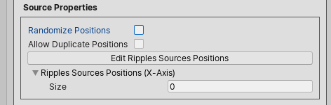
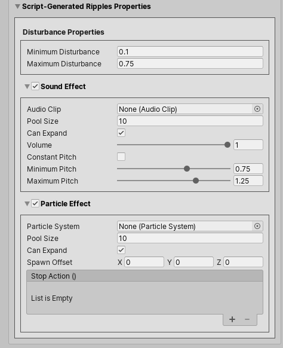
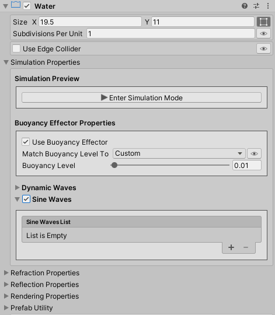
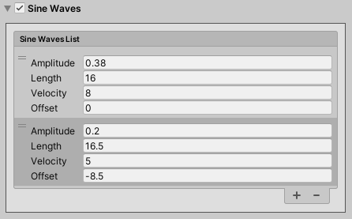

Tweaking The Water Simulation¶
What we'll cover on this page?¶
All the water simulation properties are tweaked under the Simulation Properties in the water component inspector.
Tip
We can use the simulation mode to quickly and easily tweak and test the water system simulation properties, in realtime, right in the edit mode without the need to switch to play mode. All we need to do is to press the Enter Simulation Mode button.
Buoyancy Effector Properties¶
The Use Buoyancy Effector toggle controls whether or not to use a Buoyancy Effector 2D component.
Under the Simulation Properties, the Buoyancy Level property controls the surface location of the buoyancy effector. When rigidbodies are intersecting or below the surface level, buoyancy forces are applied to them.
We can set the Buoyancy Level to an arbitrary value between 0 (water's top edge) and 1 (water's bottom edge), or you can match it to one of the following options:
- Water Top Edge
- Surface Level: only available when the surface is enabled in the material inspector.
- Submerge Level: Only available when the fake perspectve effect is enabled in the material inspector.
Script Reference
1 2 3 4 5 6 | |
Waves Can Affect Rigidbody¶
We can make rigidbodies, that are floating on water, follow the undulations of water waves by enabling the Waves Can Affect Rigidbodies property. The Strength slider property controls the strength of the force applied to those rigidbodies.
Script Reference
1 2 | |
Dynamic Waves¶
There are 3 types of dynamic waves:
- On-Collision Ripples
- Constant Ripples
- Script-Generated Ripples
Wave Properties¶
The Stiffness property controls the frequency of the wave vibration (how fast the water oscillates). A low value make the water oscillate slowly, while a high value make it oscillate quickly.
The Spread property controls how fast the waves propagate.
The Damping property controls how fast the water stops oscillating. The lower the damping value is, the longer the water keeps oscillating.
Script Reference
1 2 3 | |
When a wave reaches a boundary, it bounces back. And by default, the simulation boundaries are the left and the right water edges. But, we could define our own boundaries by checking the "Use Custom Boundaries" property, and defining the custom boundaries locations.
Tip
We can visualize the simulation boundaries positions in the scene view by toggling the 'eye icon' on.
Script Reference
1 2 3 | |
The Limit maximum disturbance property allows us to limit the maximum disturbance caused by different types of ripples. For instance, when two ripples happen to disturb the same surface vertex, the sum of the disturbance caused by those two ripples are added together and applied to that vertex. When this property is enabled, the resultant disturbance is clamped to the specified maximum disturbance value. So the applied disturbance to the surface vertex is never greater than the specified maximum value.
Script Reference
1 2 | |
On-Collision Ripples Properties¶
On-Collision Ripples are created when:
- A rigidbody falls into water.
- A rigidbody gets out of water.
- A rigidbody moves in water.
Script Reference
1 2 3 | |
Collision Properties¶
Collision Filtering¶
Under the Collision Properties, the Collision Mask property controls which objects layers are able to create on-collision ripples.
We can also filter the rigidbodies by their depth (z-position), and as such they should have a depth value between the Minimum Depth and the Maximum Depth properties values to be able to create on-collision ripples.
Next, the Maximum Distance property controls the maximum distance from the water surface over which to check for collisions.
Lastly, the Ignore Triggers property controls whether or not a collider that is marked as "Is Trigger" can create on-collision ripples.
Script Reference
1 2 3 4 5 | |
2D Box Collider¶
The water object has an attached 2D Box Collider. This collider is configured as a Trigger and has the same size as the water object. By default, the collider's top edge matches the water's top edge, so when a rigidbody crosses the water's top edge, it generates on-collision ripples.
We can match the collider's top edge to one of the following options:
- Water Top Edge
- Surface Level: Only available when the surface is enabled in the material inspector.
- Submerge Level: Only available when the fake perspective effect is enabled in the material inspector.
On-Water-Enter And On-Water-Exit Ripples Properties¶
On-Water-Enter ripples are created when a rigidbody falls into water.
On-Water-Exit ripples are created when a rigidbody gets out of water.
Disturbance Properties¶
The Minimum Disturbance and the Maximum Disturbance properties control the minimum and the maximum displacement of the water surface, respectively, when a rigidbody gets into or out of water. The greater the velocity of the rigidbody, the greater the disturbance.
The Minimum Velocity property controls the minimum velocity that a rigidbody hitting the water should have to cause the Maximum Disturbance to the water surface.
Script Reference
1 2 3 | |
On-Water-Enter And On-Water-Exit Events¶
The OnWaterEnter event is triggered when a rigidbody falls into water.
Script Reference
1 | |
The OnWaterExit event is triggered when a rigidbody gets out of water.
Script Reference
1 | |
Info
The OnCollisionRipplesModule provides a static event OnWaterEnterExit(Game2DWater waterObject, Collider2D collider, bool isColliderEnteringWater) which you can subscribe to in code.
Example
1 2 3 4 5 6 7 8 9 10 11 12 13 14 15 16 17 18 19 20 21 22 23 24 25 26 | |
On-Water-Enter And On-Water-Exit Sound Effect¶
It is possible to specify an Audio Clip to play when a rigidbody falls into or gets out of the water.
The Pool Size property controls the number of audio sources to pool when the game starts playing.
The Can Expand property controls whether or not the number of pooled audio sources can increase at runtime if needed.
The Volume property controls the audio clip volume when played.
Concerning the audio clip pitch (playback speed), we can use a constant audio pitch by toggling the Constant Pitch property on and setting the constant audio clip pitch value.
But, if we would like to vary the audio clip pitch depending on the velocity of the rigidbody hitting the water, we keep the Constant Pitch property toggled off and provide a Minimum Pitch and a Maximum Pitch values instead. And in this case, the greater the rigidbody's velocity, the lower the pitch value.
Script Reference
1 2 3 4 5 6 7 8 9 10 11 12 13 14 15 16 17 18 19 20 21 | |
On-Water-Enter And On-Water-Exit Particle Effect¶

It is possible to specify a Particle System to play when a rigidbody falls into or gets out of the water.
The Pool Size property controls the number of particle systems to pool when the game starts playing.
The Can Expand property controls whether or not the number of pooled particle systems can increase at runtime if needed.
The Spawn Offset property controls how much to shift the particle system spawn position.
Lastly, the StopAction event is triggered whenever a particle system ends playing.
Script Reference
1 2 3 4 5 6 7 8 9 10 11 12 13 14 15 | |
On-Water-Move Ripples¶
On-Water-Move ripples are created when a rigidbody, that is floating on water, moves.

Disturbance Properties¶
The Maximum Disturbance property controls the maximum displacement of the water surface when a rigidbody moves in water. The greater the horizontal velocity of the rigidbody, the greater the disturbance.
The Minimum Velocity property controls the minimum horizontal velocity that a rigidbody should have to cause the Maximum Disturbance to the water surface.
The Smoothing Factor property controls how much to disturb neighbor surface vertices in order to create a smoother-looking ripple.
Script Reference
1 2 3 | |
Constant Ripples¶
Constant Ripples are created at regular time intervals.
The Continue creating ripples when off-screen property controls whether or not the water script keeps creating ripples even when the water object is not visible to any camera.
Script Reference
1 2 | |
Constant Ripples Time Interval¶
We could specify a fixed time interval, or just provide the minimum and the maximum time intervals and let the water script pick a random time interval each time ripples are created.
Script Reference
1 2 3 4 | |
Source Properties¶
A constant ripple originates from the disturbance of a surface vertex, which we will refer to as the ripple source.
If the Randomize Source property is toggled on, the water script will randomly pick "Ripples Source Count" surface vertices, and disturb them.
Script Reference
1 2 | |

But if the Randomize Source property is left toggled off, we select the surface vertices ourselves in the scene-view.
Info
The green and the red dots in the scene-view represent the water mesh surface vertices. Clicking the green dot adds the surface vertex to the ripples source positions list, and clicking the red dot removes it from the list.
The Allow Duplicate Positions property controls whether or not to disturb a surface vertex, that is present in ripples source positions list multiple times, more than once.
Script Reference
1 2 3 | |
Constant Ripples Disturbance Properties¶
We could specify a fixed disturbance value, or just provide the minimum and the maximum disturbance values and let the water script pick a random disturbance value each time ripples are created.
If the Smooth Ripples is toggled on, the ripple source as well as its neighbor surface vertices are disturbed to form a smoother ripple. The Smoothing Factor property controls the amount of disturbance to apply to neighbor vertices, and then how smooth the created ripple looks.
Script Reference
1 2 3 4 5 6 | |
Constant Ripples Sound And Particle Effects¶
As was the case with on-collision ripples, we could activate a sound and a particle effects to play whenever a constant ripple is created.
The description of the constant ripples sound and particle effects properties is exactly the same as the on-collision ripples, as discussed here.
Script Reference - Sound Effect Properties
1 2 3 4 5 6 7 8 9 | |
Script Reference - Particle Effect Properties
1 2 3 4 5 6 | |
Script-Generated Ripples¶
Script-Generated ripples are created in code by calling the GenerateRipple() method.
Example
1 2 3 4 5 6 7 8 9 10 11 12 13 14 15 16 17 18 19 20 21 22 23 24 25 26 27 28 29 30 31 32 33 34 | |
The GenerateRipple() method takes 7 parameters:
- Position: [Vector2] controls the position where we would like to create the ripple. The nearest surface vertex to this position is disturbed.
-
Disturbance Factor: [Float, Range: 0..1] controls the amount of disturbance to apply to the water surface. The actual applied disturbance is computed by interpolating the Minimum Disturbance and the Maximum Disturbance by this factor.
Info
The Minimum Disturbance and the Maximum Disturbance are set in the inspector. We'll see them shortly.
-
PullWaterDown: [Bool] controls whether the water surface is pulled down or pushed up when creating the ripple. This mimics an object falling into water or getting out of water, respectively.
- PlaySoundEffect: [Bool] controls whether or not to play the sound effect.
-
PlayParticleEffect: [Bool] controls whether or not to play the particle effect.
Info
The sound and the particle effects properties are set in the inspector. We'll see them shortly.
-
SmoothRipple: [Bool] controls whether or not to disturb neighbor surface vertices in order to create a smoother ripple.
- Smoothing Factor: [Float, range: 0..1] controls the amount of disturbance to apply to neighbor vertices.
Script-Generated Ripples Disturbance Properties¶
We set the Minimum Disturbance and the Maximum Disturbance properties in the inspector.
Script Reference
1 2 | |
Script-Generated Ripples Sound And Particle Effects Properties¶

The description of the script-generated ripples sound and particle effects properties is exactly the same as the on-collision ripples, as discussed here.
Script Reference - Sound Effect Properties
1 2 3 4 5 6 7 8 9 | |
Script Reference - Particle Effect Properties
1 2 3 4 5 6 | |
Sine Waves¶

Besides the dynamic waves, we can also have overlapping sine waves. We can enable Sine Waves under the Simulation Properties in the water component inspector.

For each sine wave, we can set its:
- Amplitude: The height from the water's rest position to the wave crest.
- Length: The crest-to-crest distance between sine waves in units.
- Velocity: The distance the crest moves in units per second.
- Offset: The starting phase of the sine wave.